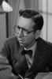

Country:United States, 119 minutes
Spoken languages:
Genres:Drama
Director(s):Otto Preminger
Writer(s):Ben Hecht, Nelson Algren, Walter Newman, Lewis Meltzer
Video Codec:Unknown
Number: 1628


Certification:
Storyline:
A junkie must face his true self to kick his drug addiction.
Cast: 


Medium: Original DVD,
Comments: w/ D.O.A & David Copperfield
Loaned: No
Aspect ratio: Unknown